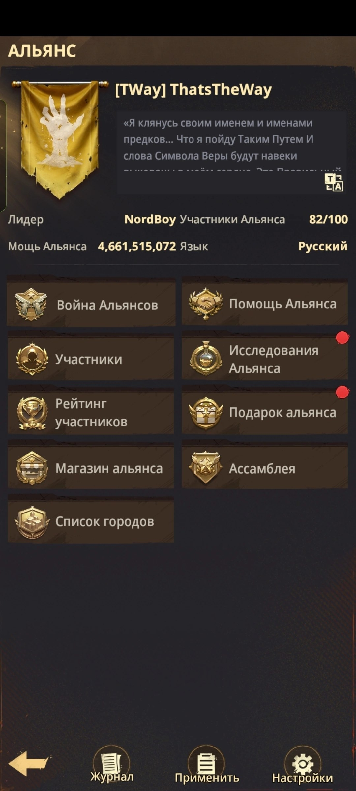
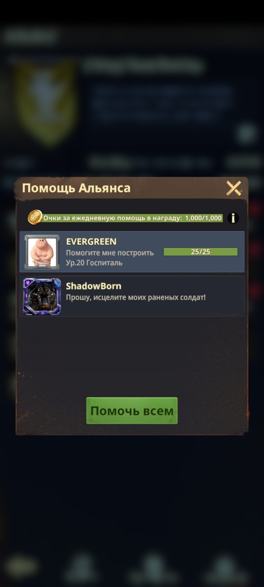
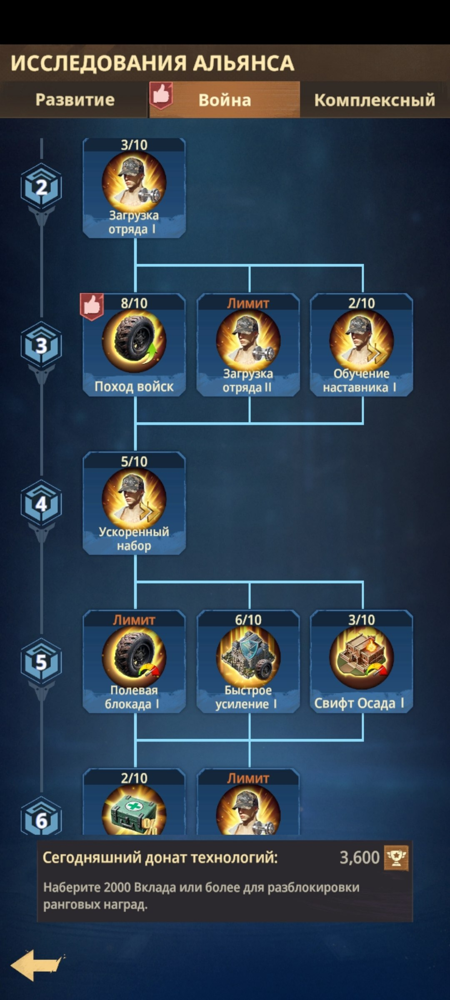
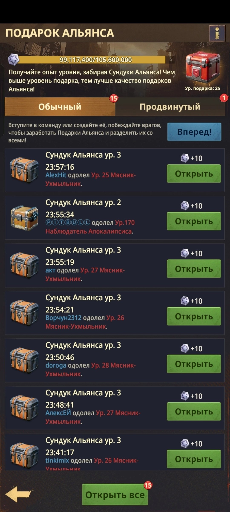
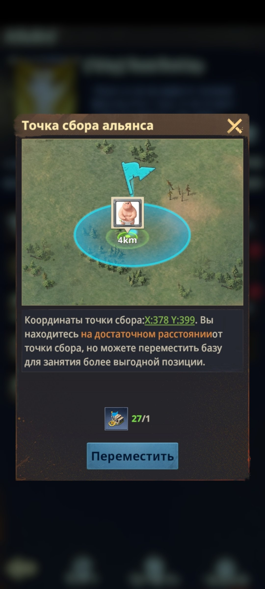
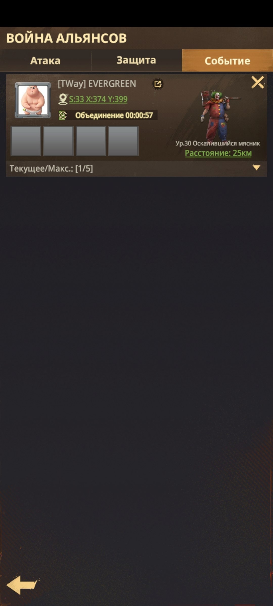
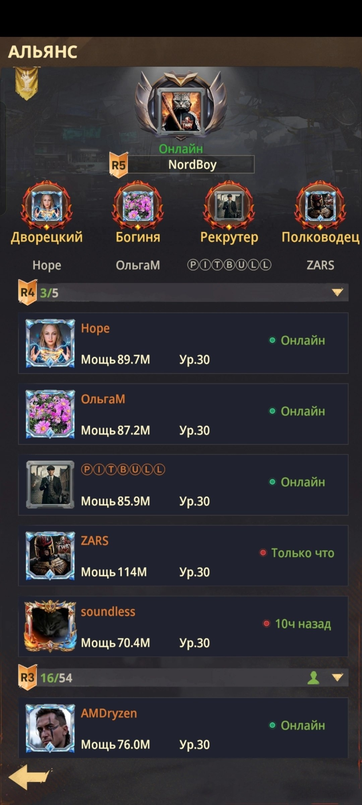
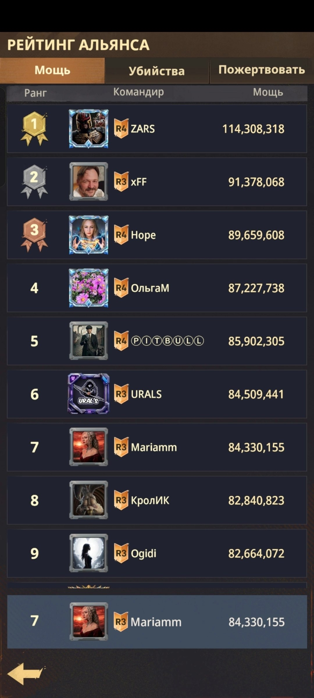
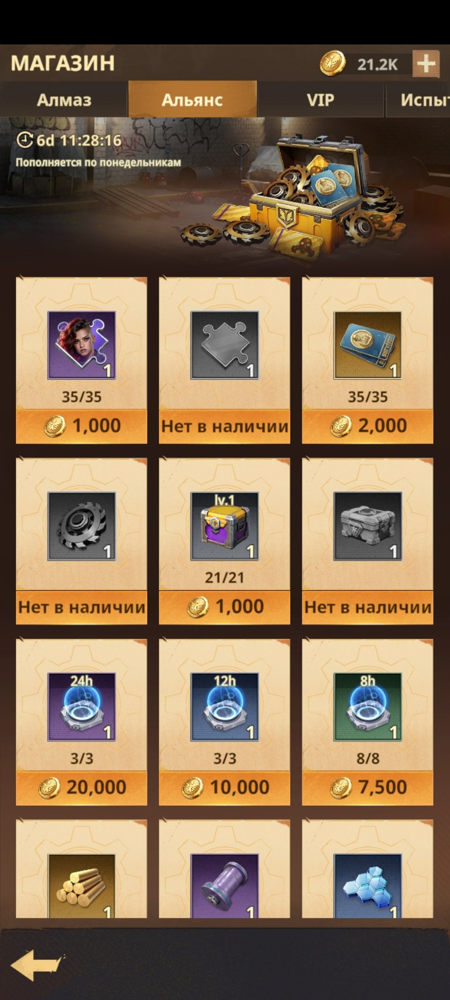
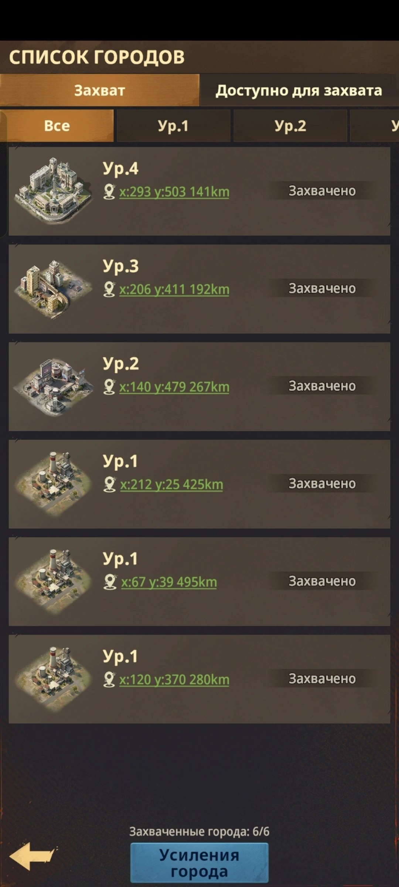

📚 Разделы Альянса
📚 РАЗДЕЛЫ АЛЬЯНСА 📄 Страница 1 из 5 Ниже собраны основные разделы меню Альянса и кратко разобрано, для чего нужен каждый из них. 🛡️ Используйте кнопки навигации, чтобы последовательно изучить все возможности.

🛡️ Основные разделы меню Альянса
📚 РАЗДЕЛЫ АЛЬЯНСА 📄 Страница 2 из 5 🤝 Помощь Альянса Здесь появляются запросы о помощи от соклановцев: ускорение строительства, исследований и лечения. Нажмите на «ручки» 🤝 - за помощь вы получаете монеты Альянса. За каждую оказанную помощь вы получаете монеты Альянса, но действует дневной лимит помощи. 🔬 Исследования Альянса Жертвуйте нефтью, чтобы исследовать механики, усиливать их и ускорять развитие участников и самого Альянса. За пожертвования вы также получаете монеты Альянса.

🤝 Помощь Альянса

🔬 Исследования Альянса
📚 РАЗДЕЛЫ АЛЬЯНСА 📄 Страница 3 из 5 🎁 Подарок Альянса Здесь забираются подарки, которые появляются после выполнения заданий участниками Альянса: за победу над зомби или Наблюдателем, а также за донат. 📍 Ассамблея Это метка и точка сбора на карте. Функция работает только с телепортом «Релокатор Альянса», который можно приобрести в Магазине Альянса. ⚔️ Война Альянса Здесь отображаются сборы на зомби, Наблюдателя и босса Засады, а также нападения и соответствующие координаты.

🎁 Подарок Альянса

📍 Ассамблея

⚔️ Война Альянса
📚 РАЗДЕЛЫ АЛЬЯНСА 📄 Страница 4 из 5 👥 Участники Здесь можно найти участников Альянса, их ранг, время последнего посещения, уровень Базы и общую мощь. 🏅 Рейтинг участников Рейтинг участников составляется по общей боевой мощи. Используйте его, чтобы видеть вклад игроков и динамику развития.

👥 Участники Альянса

🏅 Рейтинг участников
📚 РАЗДЕЛЫ АЛЬЯНСА 📄 Страница 5 из 5 🛒 Магазин Альянса Тратьте накопленные монеты Альянса на пазлы, ускорения, телепорты, шестерёнки, щиты, карты выживших и другие предметы. Покупайте необходимые вещи с умом. 🏙️ Список городов Здесь отображаются города, которые были захвачены и находятся под контролем вашего Альянса.

🛒 Магазин Альянса

🏙️ Список городов